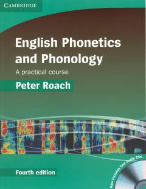

EPIngliz tili fonetikasi va fonologiyasini o'rganish uchun amaliy qo'llanma.
Ushbu kitob ingliz tili fonetikasi va fonologiyasini o'rganish uchun mo'ljallangan amaliy kurs hisoblanadi. Nazariy ma'lumotlar va amaliy mashqlarni o'z ichiga olib, talaffuzni yaxshilashga yordam beradi.